2016年

フィトチューン
ホワイト パーフェクション
- 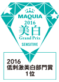MAQUIA美白・UVグランプリ2016低刺激美白部門 第1位
2015年

コスメデコルテ
リポソーム トリートメント リキッド
- 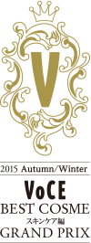2015 Autumn/Winter VOCE BEST COSMEスキンケア編 グランプリスキンケア編 化粧水部門 第1位
- 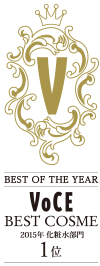VOCE 2015 年間ベストコスメ化粧水部門 第1位
- 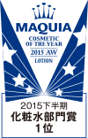MAQUIAベストコスメ 2015年下半期化粧水部門 第1位
- 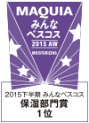MAQUIA みんなのべスコス2015年下半期保湿部門 第1位
- 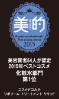美容賢者54名が認定 2015年ベストコスメ総合 第4位 ／ 化粧水部門 第1位
- 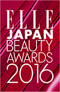ELLE 発表！ビューティジャパンアワード2015保湿部門 第1位
- All About ベストコスメ大賞 2015スキンケア編 化粧水部門 大賞
- 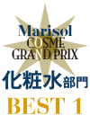Marisol 2015年下半期マリソルベストコスメ大賞化粧水部門 best1
- 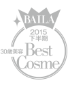BAILA 2015年下半期30代のためのベストヒットコスメBEST of BEST
- 美ST 2015年ベストSST大賞 スキンケア部門SST大賞 第2位／シワ賞 第1位
- 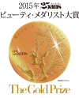25ansビューティ・メダリスト大賞スキンケア部門 金賞
- 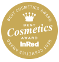InRed 美容のプロ100人が選ぶベストコスメ大賞2015スキンケア部門 lotion 第1位
- 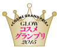GLOWコスメグランプリ2015化粧水・乳液部門 第1位
- 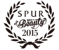SPUR 2015年下半期「モードを変える」ベスト・オブ・ビューティベスト・オブ・ローション
- 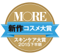2015年下半期MOREコスメ大賞新作スキンケア部門 化粧水 第1位
- 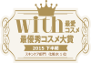2015年下半期with最愛コスメスキンケア部門 化粧水 第1位
- 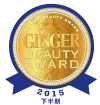2015年下半期GINGERビューティーアワード発表潤い部門 金賞
- 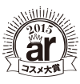ar ベストコスメ化粧水部門 大賞
- 美人百花 ベストコスメスキンケア部門 大賞 ／ 化粧水 第1位
- Domani Best Cosmeスキンケア 化粧水 第1位
モイスチュアリポソーム
コスメデコルテ 化粧液
- 美的 読者が選ぶベストコスメ2015 ～スキンケア編スキンケア部門 第1位 ／ ブースター編 第2位 ／ 乾燥ケア編 第1位
- MAQUIA 美女医100人に聞いた「激務に耐えうる、実力派」コスメ美容液部門 第1位

AQ MW
フェイスパウダー
- ＠ｃｏｓｍｅ ベストコスメアワード2015ベストパウダー 第1位
- SWEET スウィートベストコスメ2015ルースパウダー部門 第1位
- Oggiベストコスメ大賞フェースパウダー部門 第1位
- 美的 読者が選ぶベストコスメ2015 ～ベースメイク編フェイスパウダー編 第1位

フィトチューン
フォーミング ウォッシュ
- 2015年下半期with最愛コスメスキンケア部門 洗顔料 第1位
- InRed 美容のプロ100人が選ぶベストコスメ大賞2015スキンケア部門 washing 第1位
- BAILA 2015年下半期ベストヒットコスメ洗顔部門 第1位

フィトチューン
W クレンジング セラム
- CREAベストコスメ2015洗顔・クレンジング部門 第1位
- ar ベストコスメクレンジング部門 大賞

フィトチューン
ソフニング クレンズ
- ar ベストコスメクレンジング部門 大賞

フィトチューン
ハイドロ チューナー
- VOCE 読者が選ぶベストコスメ化粧水 第1位

セルジェニー
エマルジョン ホワイト
 MAQUIA 2015 上半期乳液部門賞 1位
MAQUIA 2015 上半期乳液部門賞 1位

セルジェニー
エマルジョン ホワイト
ローション ホワイト
クリーム ホワイト
 MAQUIA 美白グランプリ 2015ライン美白部門 第1位
MAQUIA 美白グランプリ 2015ライン美白部門 第1位 2015 SPUR 美白アワードライン美白大賞
2015 SPUR 美白アワードライン美白大賞
2014年

セルジェニー
エマルジョン
 2014 Autumn/Winter VOCE BEST COSMETICS乳液部門 第1位
2014 Autumn/Winter VOCE BEST COSMETICS乳液部門 第1位 MAQUIA COSMETIC OF THE YEAR 2014AW乳液部門 第1位
MAQUIA COSMETIC OF THE YEAR 2014AW乳液部門 第1位 All About ベストコスメ大賞 2014スキンケア編 乳液部門 第1位
All About ベストコスメ大賞 2014スキンケア編 乳液部門 第1位
セルジェニー
ローション
 2014 Autumn/Winter VOCE BEST COSMETICS化粧水部門 第1位
2014 Autumn/Winter VOCE BEST COSMETICS化粧水部門 第1位 All About ベストコスメ大賞 2014スキンケア編 化粧水部門 第1位
All About ベストコスメ大賞 2014スキンケア編 化粧水部門 第1位

AQ MW
フェイスパウダー
 2014 @cosme 上半期ベストコスメパウダー部門 第1位
2014 @cosme 上半期ベストコスメパウダー部門 第1位- 2014 上半期 with 最愛コスメ大賞ベースメイク部門 お粉 第1位

AQ MW
クリスタライズ ホワイトマスク
 美的クラブが選ぶ2014上半期ベストコスメスキンケア編 毛穴ケア部門 第1位
美的クラブが選ぶ2014上半期ベストコスメスキンケア編 毛穴ケア部門 第1位

AQ MW
リペア エマルジョン ホワイト
 MAQUIA 2014上半期乳液部門賞 第1位
MAQUIA 2014上半期乳液部門賞 第1位

AQ MW
エレガント マスカラ
 美的クラブが選ぶ 2014上半期ベストコスメメーク編 マスカラ部門 第1位
美的クラブが選ぶ 2014上半期ベストコスメメーク編 マスカラ部門 第1位

AQ MW
シングル アイシャドウ
 2014 @cosme 上半期ベストコスメアイシャドウ部門 第3位
2014 @cosme 上半期ベストコスメアイシャドウ部門 第3位

ホワイトロジスト
ホワイトロジスト MX
 2014年 ＠ｃｏｓｍｅ 上半期ベストコスメ美容液部門 第1位
2014年 ＠ｃｏｓｍｅ 上半期ベストコスメ美容液部門 第1位